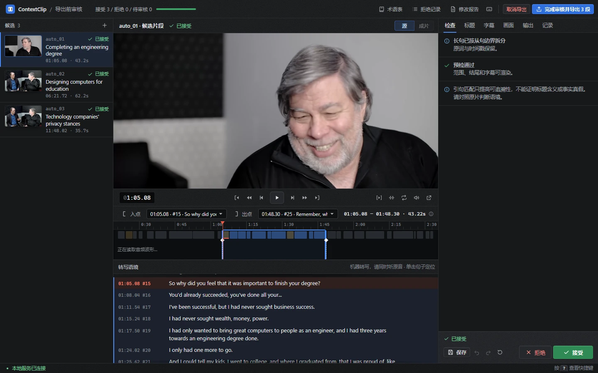

The editorial decision
The demo follows one candidate about finishing an engineering degree. It compares a later cut that begins mid-follow-up with the actual export, which retains the interviewer’s complete question.
Visual design & digital media
I work across visual design and AI-assisted media. My current project explores how an editor can preserve the meaning of an interview when cutting it short.

Featured project
A local AI-assisted editing tool that turns English interviews into vertical clips with bilingual captions. Editors can compare a candidate with its source, adjust the cut and approve it before export.
Scripted interface capture with original audio in the output preview. Interview by ConversationEDU with David Glance, adapted through excerpting, captioning and reframing. Source · CC BY 3.0
The demo follows one candidate about finishing an engineering degree. It compares a later cut that begins mid-follow-up with the actual export, which retains the interviewer’s complete question.
I led requirements and iterative review, provided trial material and specified source comparison, editorial safeguards and usability improvements. AI coding assistants supported implementation and automated testing.
One real interview regression produced three verified exports. The recorded pass focuses on engineering behavior, with independent human evaluation still pending.
Selected design work
A non-human perspective on Victoria Harbour, using spatial layers and focal points to suggest the relationship between the city and nature.
A ceramic coffee cup design that brings selected Lingnan and Portuguese motifs together through proportion and placement.
A retail advertising concept that balances traditional visual features with a clear commercial message.
A conceptual artwork that uses layers, texture and detail to suggest fading time and memory.
About
I studied Theatre, Film and Television Art and Design at Zhujiang College, South China Agricultural University. Stage design taught me to use space, light and composition to guide attention.
I bring that perspective to digital media. I’m interested in how editing decisions and AI systems shape what audiences see and how they interpret it.